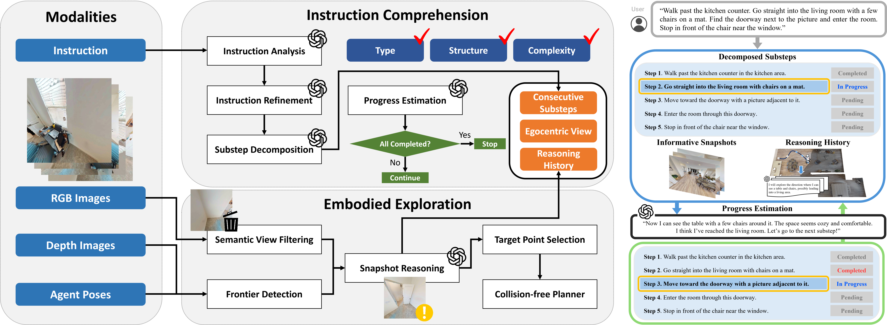
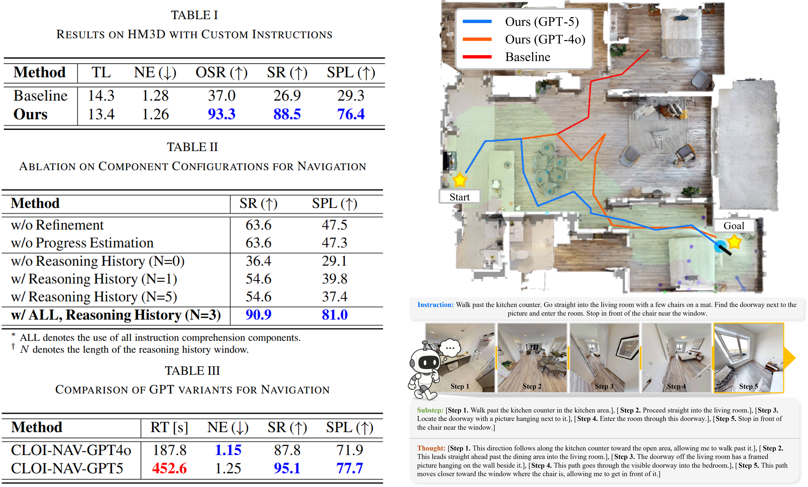

Remarkable advances in Vision-Language Models (VLMs) and Large Language Models (LLMs) have accelerated progress in the field of intelligent robotics, enabling embodied agents to perceive, reason, and act in a human-like manner. One of the mainstream challenges in embodied AI is Vision-and-Language Navigation (VLN), where an agent is required to follow natural language instructions to navigate through previously unseen environments using visual observations. Despite recent progress, existing VLN approaches often struggle to handle long-horizon and ordered instructions, which are prevalent in realistic navigation scenarios. Such instructions involve multiple sequential substeps where later actions depend on earlier completions, requiring contextual order understanding and stepwise execution. In this work, we present CLOI-NAV, a framework that performs sequential reasoning to follow navigation instructions in unseen environments while preserving the intended order. We evaluate CLOI-NAV using our new instruction datasets featuring sequential dependencies in photorealistic environments. Through extensive experiments, we demonstrate that our method enables more accurate instruction following while maintaining path efficiency, with success rate improving from 26.9 to 88.5 and SPL from 29.3 to 76.4.


To be Updated... 🚀
To be Updated... 🚀